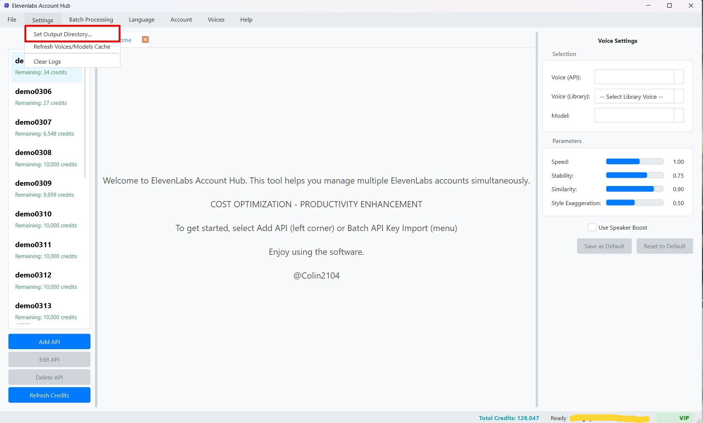
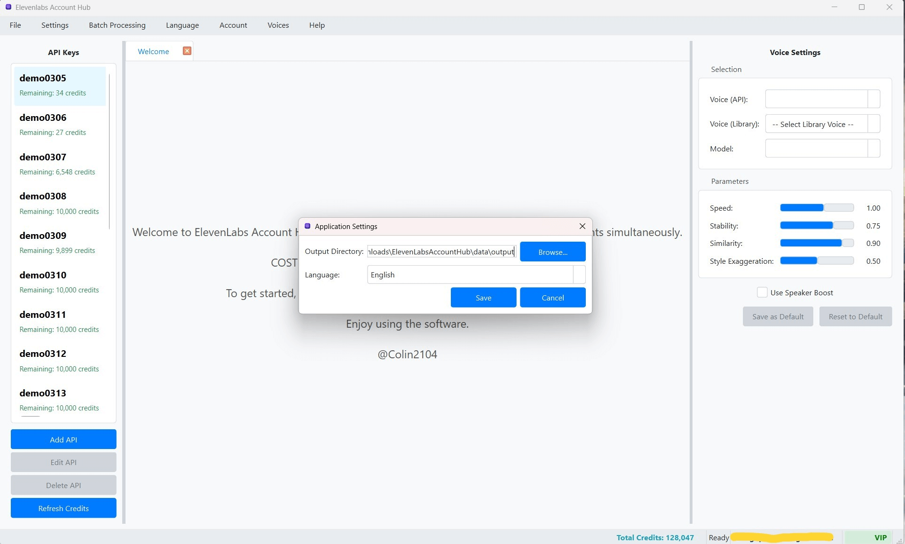

Thay đổi Thư mục Lưu trữ Mặc định cho Tệp Âm thanh
Mỗi khi bạn tạo giọng nói thành công bằng ElevenLabs Account Hub, tệp âm thanh (thường ở định dạng .mp3) sẽ được tự động lưu vào một thư mục trên máy tính của bạn. Phần mềm cho phép bạn tùy chỉnh thư mục lưu trữ mặc định này để phù hợp với quy trình làm việc và cách tổ chức tệp của bạn.
1. Truy cập Cài đặt Ứng dụng
Để thay đổi thư mục lưu trữ mặc định, bạn cần truy cập vào cửa sổ Cài đặt chung của ứng dụng:
- Trên Thanh Menu của cửa sổ chính, chọn "Settings" (Cài đặt).
- Từ menu con xổ xuống, chọn "Cài đặt Ứng dụng" (Application Settings). Một số phiên bản cũ hơn có thể có tùy chọn trực tiếp như "Đặt thư mục đầu ra" (Set Output Directory) trong menu này.  (Hình ảnh: Vị trí menu "Cài đặt Ứng dụng")
- Cửa sổ "Cài đặt" (Settings) sẽ xuất hiện. Cửa sổ này chứa các tùy chọn cấu hình chung cho toàn bộ ứng dụng.
2. Chọn Thư mục Lưu trữ Mới
- Trong cửa sổ "Cài đặt", tìm đến mục có nhãn liên quan đến thư mục lưu trữ, ví dụ: "Thư mục Lưu trữ Mặc định" (Default Output Directory) hoặc "Thư mục Lưu trữ Âm thanh TTS" (TTS Audio Output Directory).  (Hình ảnh: Mục cài đặt Thư mục Lưu trữ Mặc định trong cửa sổ Cài đặt)
- Bạn sẽ thấy một ô hiển thị đường dẫn đến thư mục hiện tại đang được sử dụng để lưu các tệp âm thanh.
- Bên cạnh ô đường dẫn này, nhấn nút "Browse..." (hoặc "Chọn Thư mục", "Thay đổi...").
- Một hộp thoại chọn thư mục chuẩn của hệ điều hành (Windows Explorer, Finder, v.v.) sẽ xuất hiện.
- Sử dụng hộp thoại này để duyệt đến vị trí thư mục trên máy tính mà bạn muốn sử dụng làm nơi lưu trữ mặc định cho tất cả các tệp âm thanh được tạo ra bởi ElevenLabs Account Hub.
- Sau khi chọn được thư mục mong muốn, nhấn nút "Select Folder" (hoặc "OK", "Chọn") trong hộp thoại chọn thư mục.
- Đường dẫn thư mục mới bạn vừa chọn sẽ được cập nhật vào ô hiển thị trong cửa sổ "Cài đặt" của ứng dụng.
- Cuối cùng, nhấn nút "Lưu" (Save) hoặc "OK" trong cửa sổ "Cài đặt" của ứng dụng để áp dụng thay đổi này.
Từ thời điểm này trở đi, tất cả các tệp âm thanh mới được tạo ra sẽ được tự động lưu vào thư mục bạn vừa chọn.
Lưu ý Quan trọng khi Chọn Thư mục Lưu trữ
- Quyền Ghi (Write Permissions): Đảm bảo rằng ứng dụng ElevenLabs Account Hub có đủ quyền ghi (write permissions) vào thư mục bạn đã chọn. Nếu không, việc lưu tệp có thể thất bại và bạn sẽ nhận được thông báo lỗi. Điều này đặc biệt quan trọng nếu bạn chọn một thư mục nằm trong các khu vực được bảo vệ của hệ thống.
- Tổ chức Tệp Hiệu quả: Việc chọn một thư mục lưu trữ riêng biệt, dễ nhớ và có cấu trúc (ví dụ:
D:\ElevenLabs_Audio\Project_A) sẽ giúp bạn quản lý các tệp âm thanh đã tạo một cách hiệu quả hơn, thay vì để chúng lẫn lộn trong thư mục Downloads hoặc một thư mục tạm nào đó. - Thư mục Mặc định Ban đầu: Nếu bạn không thực hiện thay đổi này, phần mềm có thể lưu tệp vào một thư mục con mặc định bên trong thư mục cài đặt của ứng dụng (ví dụ: một thư mục tên là
data/output/hoặcaudio_output/nằm cùng cấp với tệp.execủa chương trình) hoặc thư mục "Downloads" của người dùng hiện tại. Kiểm tra cài đặt ban đầu để biết vị trí mặc định nếu bạn chưa thay đổi. - Không Ảnh hưởng đến Tệp Cũ: Việc thay đổi thư mục lưu trữ mặc định chỉ ảnh hưởng đến các tệp âm thanh được tạo sau khi bạn thực hiện thay đổi. Các tệp đã được tạo và lưu trước đó sẽ không tự động được di chuyển đến thư mục mới. Nếu bạn muốn di chuyển chúng, bạn cần thực hiện thủ công.